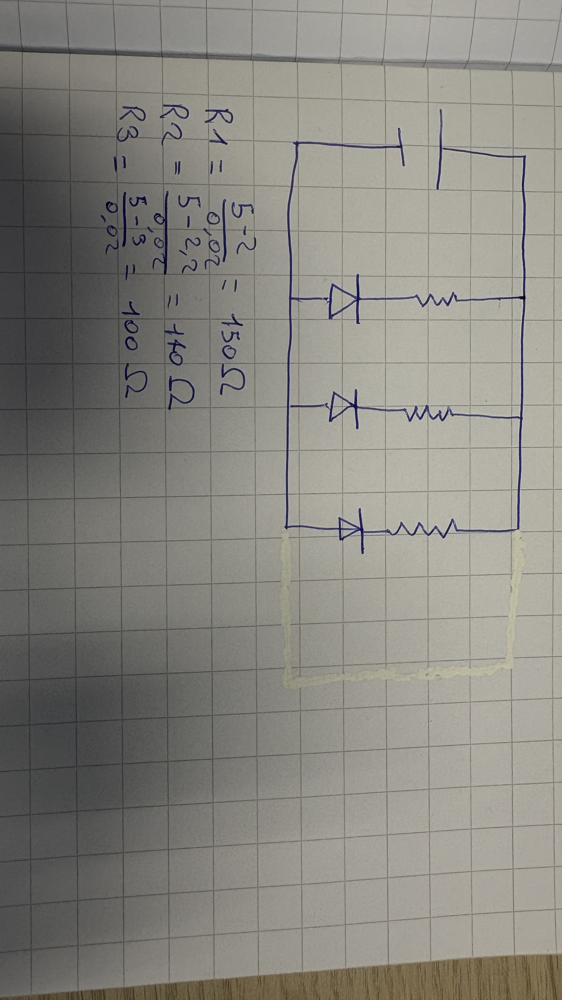
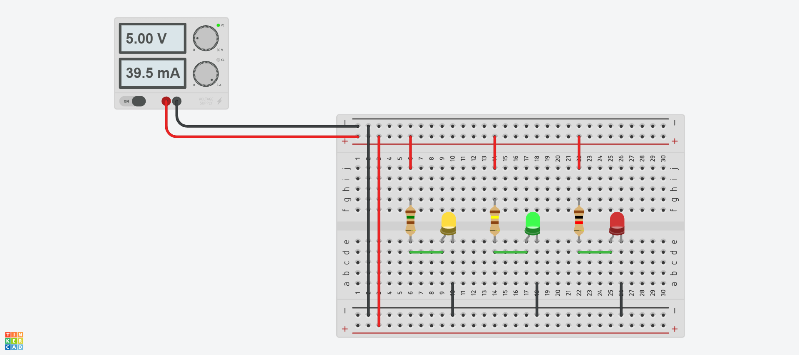

Sta mattina abbiamo risolto un problema di un circuito di 3 led di colori diversi in parallelo sul quaderno per poi verificare su tinkercad se i calcoli fossero tutti corretti. I calcoli fatti sono stati tutti con lo stesso procedimento, cioè dovevamo trovare la "R" nonchè la resistenza delle resistenze, il calcolo effettivo che abbiamo dovuto fare è stato Vg - Vled / 00,2 (ampere di ogni led), i risultati che mi sono usciti sono segnati qua sotto nell'immagine
Dopo aver fatto tutti i calcoli, come avevo anticipato abbiamo riprodotto il circuito su tinkercad, dove abbiamo dovuto creare un circuito di led in parallelo dove se una delle 3 lampadine si rompeva voleva dire che abbiamo sbagliato tutti il calcolo.
Alla fine mi è uscito tutto giusto perchè i led non sono esplosi e i calcoli di conseguenza mi sono usciti tutti giusti.